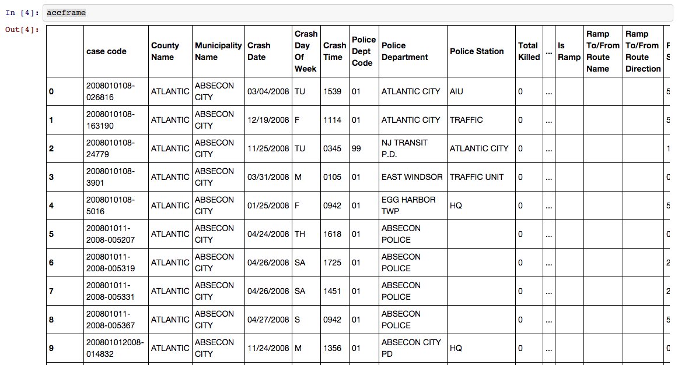
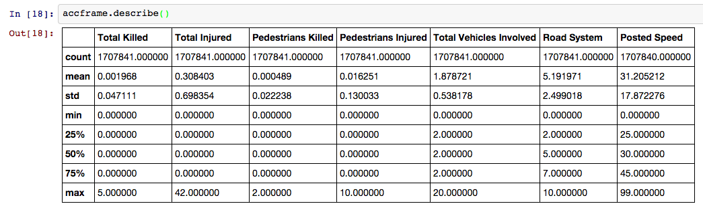

Pandas, The First Look
Now that we're comfortable with creating our coding environment and dabbling with the iPython notebook, it's time to dive into pandas, the Python library created explicitly for data analysis.
First, we'll import pandas, creating the local namespace of "pd".
import pandas as pd
Today, we're going to work with a fairly large text file of car accident data from the New Jersey Department of Transportation. This file contains reports from accidents in the Garden State between 2008 and 2013. The data, originally filed in handwritten reports by state troopers and then typed into a fixed-width database by clerks, is both large and very messy.
Our analysis today will not be comprehensive or particularly accurate, but working with 1.7 million rows of dirty data are what pandas is made for.
The first thing we have to do is ingest our data from a source into a pandas DataFrame object. Think of a DataFrame (similar to the R Data Frame) as a virtual spreadsheet. It has columns with unique names and rows with unique row numbers (or Index). You can read in data from many kinds of sources: json, Excel, html, sql databases or many others. Today, we're going to work with a CSV.
datafile = "njaccidents.csv"
accframe = pd.read_csv(datafile)
Let's look at our DataFrame. Look familliar? It's a table!

Let's see what we have here. Let's make a list of the columns we have to work with.
In [5]: accframe.columns
Out [5]: Index([u'case code', u'County Name', u'Municipality Name', u'Crash Date', u'Crash Day Of Week', u'Crash Time', u'Police Dept Code', u'Police Department', u'Police Station', u'Total Killed', u'Total Injured', u'Pedestrians Killed', u'Pedestrians Injured', u'Severity', u'Intersection', u'Alcohol Involved', u'HazMat Involved', u'Crash Type Code', u'Total Vehicles Involved', u'Crash Location', u'Location Direction', u'Route', u'Route Suffix', u'SRI (Std Rte Identifier)', u'MilePost', u'Road System', u'Road Character', u'Road Surface Type', u'Surface Condition', u'Light Condition', u'Environmental Condition', u'Road Divided By', u'Temporary Traffic Control Zone', u'Distance To Cross Street', u'Unit Of Measurement', u'Directn From Cross Street', u'Cross Street Name', u'Is Ramp', u'Ramp To/From Route Name', u'Ramp To/From Route Direction', u'Posted Speed', u'Posted Speed Cross Street', u'Latitude', u'Longitude', u'Cell Phone In Use Flag', u'Other Property Damage', u'Reporting Badge No.'], dtype='object')
To get a quick overview of what kind of data, try the describe method.
accframe.describe()
In earlier versions of pandas (<15), describe() gives you the summary statistics for the numeric columns. In new versions of pandas, using the include='all' keyword will summarize all the columns.

For categorical columns, you'll get the number of unique values and the most frequent, like so:
accframe[' Severity'].describe()
Returns:
count 1707841
unique 3
top P
freq 1326626
dtype: object
So say you want to select a single column. You can do this in one of two ways. If the column name is a string with spaces, you can use dot notation. accframe.Severity, for instance. Otherwise, you use a similar syntax to what we're used to with dicts, like this: accframe['County Name']. If you want to grab more than one column, give it a list of column names. If you wanted to see the 'Cell Phone In Use Flag' column, or the 'County Name' column, what would you do?
Let's take a look at cleaning messy data in columns. Why does this yield an empty DataFrame?
accframe[accframe['County Name']=='PASSAIC']
This is because with some digging, accframe[accframe['County Name'].str.contains('PASSAIC')], you'll notice that the 'County Name' column includes a ton of trailing whitespace: 'PASSAIC '.
You can use the map function to map the strip method on every string in the column.
accframe['County Name']=accframe['County Name'].map(str.strip)
Why don't you do the same for the 'Municipality Name' and 'Police Department' columns?
Now that our 'County Name' field is cleaned, we can filter by it, if we wanted to, getting a few of the DataFrame that would only show the rows with accidents that happened in Passaic County. unty.
accframe[accframe['County Name']=='PASSAIC']
Let's do a couple of more things with this.
What do we see when we look at the unique values in the 'Police Dept Code' column?
accframe['Police Dept Code'].unique()
array(['01', '99', ' ', '02', '03', '04', 1, 99, 2, 3, 4], dtype=object)
'''
If we look at just the departments with 99 as their code, we'll see they're not unique, of course.
accframe[['Police Dept Code', 'Police Department']][accframe['Police Dept Code']==99] ```
Because some of our department codes start with 0, we should probably make all of these strings rather than ints.
accframe['Police Dept Code']=accframe['Police Dept Code'].astype(str)
But we still have some empty fields with two spaces in the string, so let's fill those with the word "Unknown"
accframe['Police Dept Code'][accframe['Police Dept Code']==' ']='Unknown'
Finally, for now, let's make smaller DataFrames of just the columns that we plan to use for this analysis.
myframe = accframe[['County Name', 'Municipality Name', 'Crash Date', 'Crash Day Of Week', 'Crash Time', 'Total Killed', 'Total Injured', 'Pedestrians Killed', 'Pedestrians Injured', 'Total Vehicles Involved', 'Crash Type Code', 'Alcohol Involved', 'Environmental Condition', 'Light Condition', 'Cell Phone In Use Flag']]
Finally, we can hand myframe to the next exercise for aggregating, but we might want to save it for later. Let's write it out to a csv, while we're thinking about it.
myframe.to_csv('smallertab.csv')
Now, we're ready to start digging deeper.